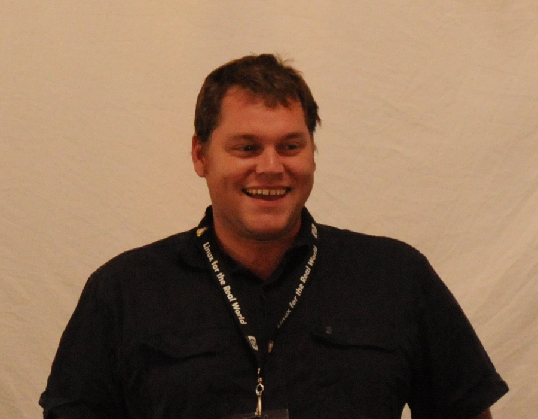
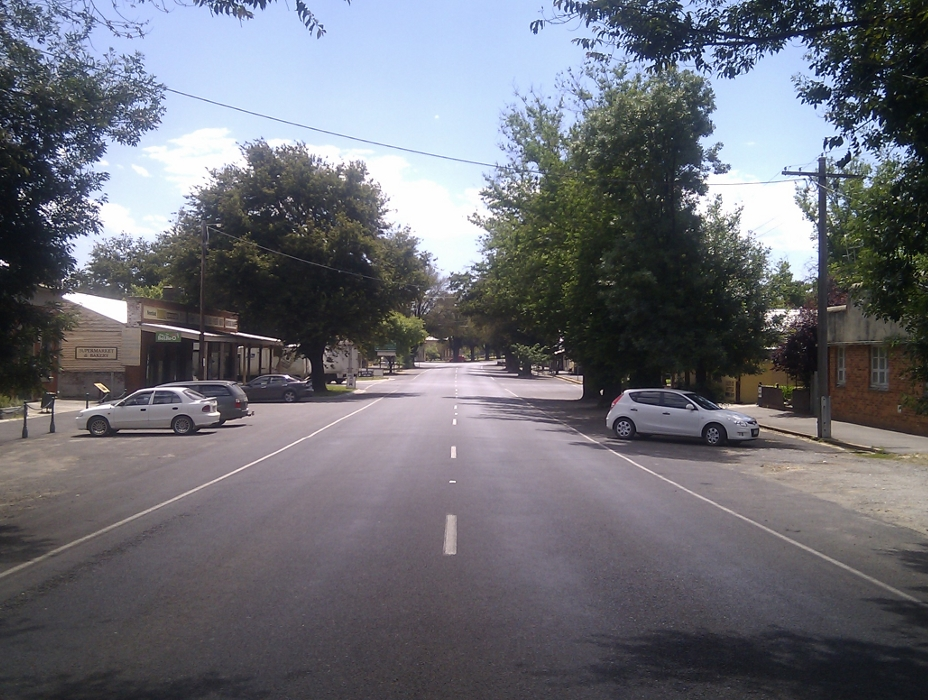
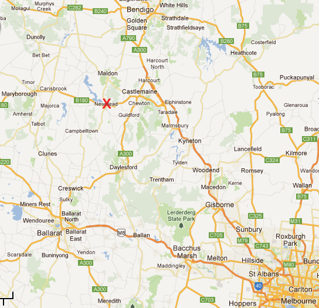
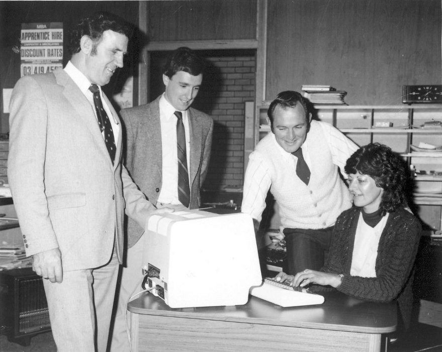
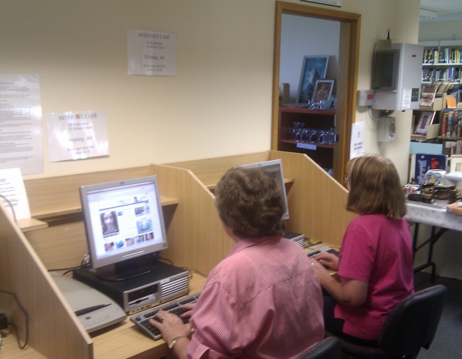

Newstead:
Australia's Most
Open Source Town
Dave Hall
15 Mar 2012
Dave Hall

Source: Ben Dechrai
Newstead

Source: Dave Hall
Key Numbers
- Town Founded: 1855
- Shire Founded: 1860
- Shire Abolished: 1995
- Population: around 450 + ~200 in surrounding district
Location

Source: Google Maps
In Town
- Rural Transaction Centre
- Renewable Newstead
- Swimming Pool
- Community Garden
- Playground
- Community Bus Service
-
Events
- Newstead Live
- Chopped
- Smaller niche events
- much more...
Technology in Newstead

Source: Newstead Historical Society
Technology Today
- Community website
- Internet cafe
- Free WiFi
- Wordpress blogs
- Open source CMS powered sites
Website - newstead.vic.au
- Drupal powered
- Funded by Bendigo Bank and Mount Alexander Shire
- Built with donated time
- Maintained by the community
- Over 60 editors trained
- 5 or 6 regular contributors
- Stage 2 revamp almost completed
Internet Cafe at RTC

Source: Dave Hall
Internet Cafe Circa 2008
- Mix of XP and Windows 98
- Not very secure
- Some lacked anti virus
- Inconsistent environments
- All kinds of stuff installed and saved
- Reliability issues
Internet Cafe Today
- Ubuntu 10.04
- Old HP P4s from ComputerBank
- LDAP Authentication, NFS home directories
- Envoironment partially locked down
- All downloads and documents deleted nightly
- Reliable
- Training facilities
WiFi Network Background
-
Lack of Broadband
- ADSL 1 - Mar 2006
- ADSL2 - Oct 2011
- Bad Copper
- Poor 3G
- Equity
- Encourage visitors to stop
WiFi Network
- Funded by Mount Alexander Shire Council
- Free backhaul provided by Internode
- 3 Access Points
- ALIX embedded x86 routers
- OpenWRT
- WiFiDog captive portal
- Custom authentication server
- 30 minute / 100Mb session limits
- Whitelisted outbound ports
- OpenDNS for "filtering"
WiFi Plans
- Switch to mesh network
- Expand access points
- Get ADSL2+ ports
- Signage
- Marketing
NBN Rant
- WiMax around town
- Satelite for some outlying areas
- Everyone has a telephone, but not broadband
- Government policy is to encourage growth outside of Melbourne
- Newstead is a tree change destination
Funding
- Various sources of money
- Council community grants programs
- Other government grants
- Bendigo Bank grants program
- Other private sector programs
Challenges
- Less people to share the workload
- Expectations management
- Sustainable support models
Questions?
What?
How?
Why?
Thanks
Connect
- Twitter @skwashd
- Google+ gplus.to/skwashd
- Github github.com/skwashd
- LinkedIn linkedin.com/in/davehall
- Website davehall.com.au
Download
github.com/skwashd/lca2012-newstead
Visit Newstead!
Directions from LCA
License

Newstead: Australia's Most Open Source Town by Dave Hall is licensed under a Creative Commons Attribution-NonCommercial-ShareAlike 3.0 Australia License.
Based
on a work at github.com.